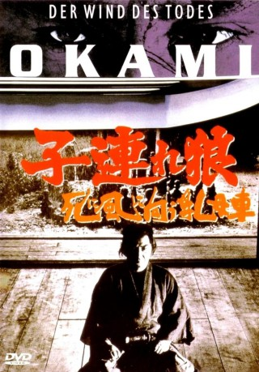

#10249 Okami 3 - Der Wind des Todes Japango *OmU*
Alternativ: Lone Wolf and Cub: Baby Cart to Hades (Englischer Titel)
 
 IMDB-Wertung: 7.7 / 10
IMDB-Wertung: 7.7 / 10  Metascore: 0
Metascore: 0 
Okami 3 - Der Wind des Todes - Die Wanderung des einsamen Wolfs Kozure Okami führt weiter durch das Japan der Edo-Zeit. Söldner machen die Straßen unsicher, junge Frauen werden in die Prostitution verkauft, Dörfer niedergebrannt. In dieser Welt beweist Kozure Okami einmal mehr, dass auch ein Ronin, der seine Ehre verloren hat, ein aufrechter Mann ist. Er nimmt Folter auf sich, um eine Frau aus den Händen der Yakuza zu befreien, und stellt sich der Armee des feigen, aber intriganten Gouverneurs. Auch auf dem weißen Pfad der Hölle kann man den wahren Weg des Kriegers gehen.
Japanisch mit deutschen Untertiteln
Jahr: 1972
Dauer: 89 Minuten
FSK: 18
Land: Japan Studio: Toho CompanyTonspuren:
Untertitel: Deutsch,
Auflösung: 1080p (1920x824) Größe: 5601 MB
Genre: Action, Drama
Regisseur: Kenji Misumi
Drehbuch: Kazuo Koike, Goseki Kojima, Kazuo Koike
Soundtrack: Hiroshi Kamayatsu, Hideaki Sakurai
Darsteller:
 Tomisaburô Wakayama als Ogami Itto
Tomisaburô Wakayama als Ogami Itto- Ichirô Nakatani als Yagyu Samurai
 Akihiro Tomikawa als Ogami Daigoro
Akihiro Tomikawa als Ogami Daigoro- Gô Katô als Magomura Kanbei
- Yûko Hama als Koshio Torizo / Miura Tori
- Isao Yamagata als Sawatari Genba
- Michitarô Mizushima als Itakura Naizen-no-Sho
- Sayoko Katô als Omatsu
- Jun Hamamura als Miura Tatewaki
- Daigo Kusano als Kuchiki Rokubei
- Shun'ya Wazaki als Ikiji Samon
- Hiroshi Nawa als Monkumatsu
- Sakai Umezu als
- Saburô Date als Swift-style swordsman
- Hatsuo Yamaya als
- Kazuma Otabe als
- Yukio Horikita als
- Toru Yamaguchi als
- Tadashi Iwata als
- Daisuke Shiraba als
- Katsutoshi Akiyama als
- Shingo Ibuki als
- Naoki Ando als
- Takako Ashizawa als
- Daisuke Awachia als
- Masaru Shiga als
- Fumio Terauchi als
- Mayoko Kikuno als
- Katsuyoshi Baba als
- Kiroko Arakawa als
- Tôru Abe als Samurai Officer
Datei: X:\FSK18-Eastern-Collections\Okami\Okami 3 - Der Wind des Todes Japango OmU (1972, FSK18, 1920x824).mkv seit 27.12.2018
Festplatte: FSK18
 Es gibt insgesamt 9 Filme in der Gruppe 'FSK18-Eastern-Collections\Okami'
Es gibt insgesamt 9 Filme in der Gruppe 'FSK18-Eastern-Collections\Okami'